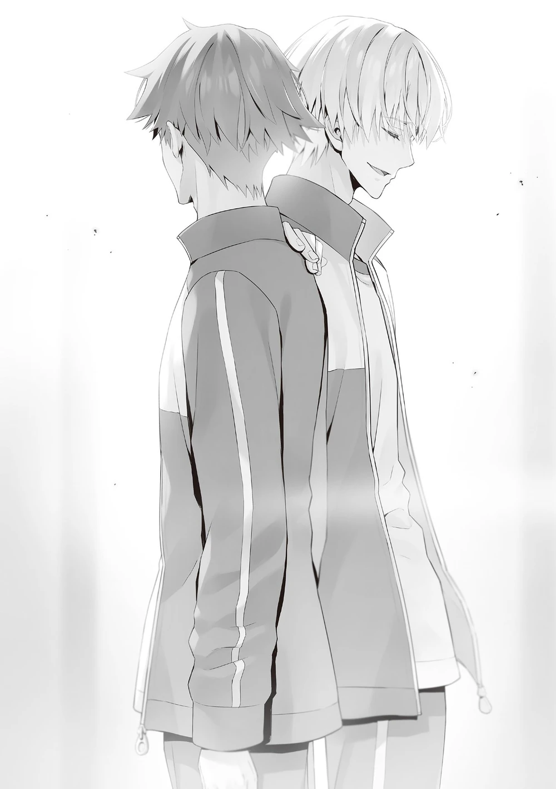

Sonunda, lig usulü turnuva sona erdi ve 19 maç tamamlandı.
Kiryūin’in grubu final karnesine 19 maçta on beş galibiyet ve dört mağlubiyet yazmıştı.
Benim kişisel rekorum ise on yedi galibiyet ve iki mağlubiyetti.
Final sıralamamız ise dördüncülüktü.
Bu büyük bir başarı olarak değerlendirilebilirdi.
Ve başından beri en güçlü aday olarak gösterilen Nagumo’nun grubu, on sekiz galibiyet ve bir mağlubiyetle birinci oldu.
Aldıkları tek mağlubiyet son maçta seçilen bir kart oyunundaki şanssızlıklarından dolayıydı.
O ana kadar sadece üç galibiyeti olan bir gruba yenildiler ki bu da oyunun şans faktörü düşünüldüğünde normal bir durumdu.
Boş dinlenme alanında, Nagumo ve ben baş başa kalmıştık.
“İki kez kaybetmeme izin vermen, senin yenilgine sebep olan şeydi, değil mi?”
“Öyle demek isterdim ama on ikiden fazla maça katılan ve iki veya daha az mağlubiyeti olan tek kişi sen olduğun için, bu konuda şikâyet etmek saçma olurdu.”
Nagumo, her an her grubun liderinden detaylı bilgi alabiliyordu, bu yüzden tüm maçların bireysel sonuçlarını biliyor gibi görünmesi şaşırtıcı değildi.
Görünüşünün aksine, oldukça dikkatli bir gözlemciydi.
“Ama gerçekten en iyi üyen Amasawa harika bir performans sergiledi. Hedefleri zarafetle vuruyor.”
“Bana yağ çekme. Bilerek üçüncülüğü hedefledin, değil mi? Karşıma çıktığında bir nebze tatmin olabilmem için bunu ayarladığın apaçık ortadaydı.”
“Seni övmeye çalışan bir kōhainin övgülerini içtenlikle kabul etmeni isterdim, Senpai.”
“O zaman elinden geleni ardına koyma. Bu hareketlerin sadece kışkırtma gibi geliyor.”
Anlıyorum… Belki de daha doğal bir konuşma tarzı kullanmalıydım.
“Bireysel maçta Amasawa’ya karşı kazanmayı başardım ama grup maçında tamamen yenildik. Bizim grubumuzdaki herkes elinden geleni yapıyordu ama senin grubundaki herkesin oyunu ustalıkla oynadığı belliydi.”
Katılımcılar üç gün boyunca iyice deneyim kazanmıştı ve bu da doğrudan zaferlerine yol açmıştı.
“Kazanmaya karar verdiğimde, her şeyimle savaşırım. Bu gayet doğal. Eh, ikimiz de kart oyunlarına kurban gittik, değil mi?”
“Kesinlikle.”
Gelmek zorunda olmadığı bir oryantasyon toplantısına katılmış, hatta bahsimizin gerçekleşmesi için kendi puanlarını bile kullanmıştı.
Galibiyetinden veya mağlubiyetinden bağımsız olarak, Nagumo’nun bu sonuçtan tatmin olduğuna imkân vermiyordum.
“En baştan grup performansına göre yarışıyor olsaydık ne olurdu sence?”
“Sonucu bildiğim için, başında ben olsaydım bile kazanabileceğimi sanmıyorum.”
Mağlubiyetimi dürüstçe kabul ettim.
“Öyle mi? Gölgelerden oyun oynayarak, daha sağlam ve güvenilir bir şekilde ilerleyemez miydin?”
Ancak önümdeki adam, benim bu yenilgiyi kabul eden ifademe benden daha az inanıyordu.
“Grubun senin müdahalen olmadan on beş kez kazandı, yani harika gidiyorsun ama diğer maçları kazanmanın bir yolu yok muydu? Yoksa beni ciddiye almaya niyetin mi yoktu?”
“Bunun bir önemi yok. Rakibin mağlubiyetini satın alarak bir galibiyet elde etmeye çalışsam bile, eğer ciddiysen onu geri satın alırdın. Ayrıca bunu önceden engellemeye de çalışabilirdin. Tüm üçüncü sınıflar üzerinde kontrolün var, bu yüzden bu tür konularda iyi olmalısın.”
Eğer olayları etkilemeye çalışsaydım, Nagumo bunu doğal olarak sezer ve o da işe karışırdı.
Maddi güç savaşında ne yaparsam yapayım kazanamazdım.
“Üç galibiyeti satın alabilsek bile, her halükarda okçuluğun 17. maçında takılıp kalırdık.”
“Senin de bu konuda ciddi olduğun pek söylenemez.”
“Şey… Eğer ne pahasına olursa olsun kazanmam gerekseydi, kazanabilmek için Horikita ve Yōsuke’nin hedefleri ıskalamasını sağlardım.”
Onlar işini ciddiye alan öğrencilerdi ama sebebine bağlı olarak onları kendi tarafıma çekebilirdim.
Nagumo, ellerinden gelenin en iyisini yapacaklarına dair bir sözleşme yapmış olsa bile, o noktada ihanete uğrasaydı onları köşeye sıkıştıramazdı; çünkü böyle bir sporda hedefleri garanti vurmak pek mümkün değildi.
“Sanırım öyle.”
“Ama bunu öngörebilseydin, atanan üyeleri değiştirirdin.”
Müzakerelerimden etkilenmeyecek öğrencileri seçmesi gayet doğaldı.
“Peki bunun üzerine ne yapardın—hayır, bu konuşma iyice sidik yarışına döndü.”
Boşlukta hisseden Nagumo, konuşmamızı kendisi sonlandırdı.
Gerçeğe bakılırsa, bu sadece bir oryantasyon toplantısıydı.
Okulun da kabul ettiği, üzerine stres yapmamıza gerek olmayan bir deneyimsel öğrenmeden başka bir şey değildi.
Çok fazla para yatırılacak ya da çok fazla müzakere gerektirecek bir şey değildi.
Bu konuşma sadece bir fanteziydi, asla gerçekleşmeyecek bir şey.
“Deneyimsel öğrenmeden keyif aldım, cidden. Eğer adil bir dövüş gerçekleşemeyecekse, gerçekleşse nasıl olacağını açıklamanın kibarlık olacağını düşündüm.”
Nagumo her zaman benim gücümü bilmek istemişti.
Bu yüzden, Takahashi gibi grup üyeleri tüm maçlara yapışmış olduğu için, bir şekilde benim gerçek benliğimi hiçbir sakarlık olmadan görebilmiş olmalıydı.
Maçları kaydetmiş ve kontrol etmiş olmalıydı.
“Doğru. Okçuluk oyunu özellikle etkileyiciydi. Ellerinin gereksiz derecede maharetli olduğunu söyleyebilirim.”
“Bu yaklaşımdan memnun kalıp kalmadığınızı bilmiyorum.”
“Memnun kalmak mı? Saçmalama.”
Nagumo inanmayarak başını yana eğdi ve güldü.
“Ama epey konuşkan ve dobra biri olmuşsun.”
“Çok şey öğrenmemi sağlayan iyi bir senpai sayesinde.”
Nagumo telefonunu çıkardı ve parmak uçlarıyla ekranı kaydırdı.
“Zaferini küçümsemeye niyetim yok. Parayı transfer ettim. Kontrol et.”
“Bu konuda size güveniyorum. Ama sorun olur mu? O fonlar bazı üçüncü sınıf öğrencilerini kurtarmak için kullanılabilirdi.”
“Ne zamandır A Sınıfı’nın zirvesinde hüküm sürdüğümü sanıyorsun? Sadece kişisel cebimde birkaç milyon yenim var. Bunun bir kısmından ödeme yapmanın ne sakıncası olabilir?”
Telefonunu yerine koyarken Nagumo dışarıya bir göz attı.
“Buraya geldiğimde sana ne dediğimi hatırlıyor musun? Üniversiteye gitme konusunda.”
“Elbette.”
“Seni davet etme konusunda oldukça ciddiydim. Üniversitede TIDYL (TOKYO İLERİ DÜZEY YETİŞTİRME LİSESİ)’deki gibi gösterişli savaşlar yapamayız ama öte yandan yan yana daha fazla şey yapabiliriz, değil mi?”
“Belki de.”
“İstersen aynı üniversiteye gel. Senin şu sıkıcı kişiliğini biraz daha iyi bir hale getiririm.”
“Bunu aklımda tutacağım.”
Bunu söyleyerek Nagumo, yanından geçerken hafifçe sağ omzuma vurdu.
“Görüşürüz.”
“Mezun olacağınız için sizden benim yerime bir mesaj iletmenizi isteyebilir miyim, Nagumo-senpai?”
“Ha? Mesaj mı? Horikita-senpai’ye mi?”
“Kötü olmazdı ama hayır.”

Nagumo durduğunda, ona belirli bir kişi için olan mesajı gösterdim.
Bunu duyduktan sonra hâlâ tam olarak inanmayan Nagumo, dalga geçmeden sonuna kadar dinledi.
“Bu garip bir mesaj.”
“Umarım bunu iletebilirsiniz. Ondan sonrası karşı tarafın kararına kalmış.”
“Kesinlikle duydum ama bu bana veda hediyen mi? Eğer sessiz kalsaydın, sonucun ne olacağını kim bilebilirdi. A Sınıfı’ndan bu şekilde mezun olmamdan mutlu olmayacak insanlar var.”
“En azından, A Sınıfı’ndan mezun olmak için yeterli başarı ve niteliği gösterdiğinizi düşünüyorum.”
Mesajı Nagumo’ya emanet etmemin sebebi buydu.
“Bir adım önden gidip ikinci aşamaya Horikita-senpai’nin yerinde başlayacağım.”
‘Canın isterse katılmaktan çekinme.’ Bu son sözler, bir senpai’den gelen bir davetti.